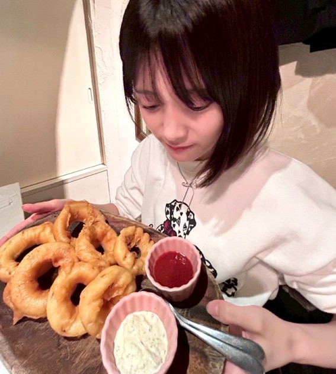

橘杏咲の立ち話もなんですから！ 第16回橘杏咲的“站着聊可说不完！” 第16回
皆さん、こんにちは✨
大家好✨
気がつけばもう11月。朝晩は指先がひんやりしてきて、ついにマフラー候補を物色し始めました。今年は何色のマフラー買おうかなぁ。無難に白を買いがちですが、もう少し可愛い色のも欲しいなと。
一转眼都已经11月了。早晚指尖都凉飕飕的，我终于开始物色围巾候选款啦。今年该买什么颜色的围巾好呢？虽然我平时总爱挑百搭稳妥的白色，但今年也想入手一条颜色更可爱一点的呀。
というか、可愛いトレーナー1枚で外出できる季節、短すぎないですか？ もっと居て…😿
话说回来，能单穿一件可爱卫衣出门的季节，未免也太短了吧？再多待一会儿嘛……😿
寝る時の格好も迷う時期ですよね。
这也是让人纠结睡觉该穿什么的时节呢。
ちなみに私のベッド周りは、最近ぬいぐるみが増えて、ふわふわもふもふな布陣が完成しました。
顺带一提，我床边最近毛绒玩偶越来越多，已经摆出了一套软绵绵毛茸茸的豪华阵容。
最近の新入りは、クレーンキャッチャーでゲットしたニコニコナビーユと赤ちゃんムースちゃんのぬいぐるみと、ヨギボーのぬいぐるみです。Tレックスでジム通いのテディくん、抱き心地パーフェクトです。
最近的新成员，有抓娃娃机抓到的笑眯眯纳比尤玩偶和宝宝版小慕斯（Mousse）玩偶，还有 Yogibo 的毛绒玩偶！那只爱去健身房的霸王龙泰迪（Teddy），抱起来的手感简直满分。
赤ちゃんムースちゃんは、実はバンドスナッチのぬいぐるみを取ろうとしていた時に偶然取れた子なんです。ギータを取ろうとしていたら、持ち上げるとすぐにアームの届かないところに落ちてしまって何度も店員さんを呼ぶのは申し訳ない…。となって近くの台にいた、私の大好きなムースちゃんにダメ元でチャレンジしたら、3回で私の元へ来てくれました！！
其实宝宝版小慕斯，是我原本打算抓豪夺乐队的玩偶时偶然抓到的孩子呢。当时我想抓奇塔，结果每次刚夹起来它就滚到爪子够不到的角落里，总叫店员来摆位置实在太不好意思了……于是就去旁边那台机子，抱着试试看的心态挑战我最喜欢的小慕斯，结果只花了3次它就来到我身边啦!!
本当に嬉しかった！！可愛すぎる！！幸せです💞
真的好开心!! 太可爱啦!! 好幸福💞
最近、友達やスタッフさんや応援してくださっている皆さんがmikkoさんのキャラクターたち(リルアラモードってお名前が最近ついたんですよ！)を見つけると、杏咲が好きな子たちだ！と教えてくださるのが嬉しいです笑
最近只要朋友们、工作人员还有支持我的大家看到插画师 mikko 的角色们（这个系列最近刚有了“Lil ala mode”的名字哦！），就会告诉我说“是杏咲喜欢的小家伙们！”，让我觉得好开心（笑）。
私がゲットできていなかったグッズを友人や皆さんがくださったりするおかげで、私の私物がリルアラモードさん色に染まっています。本当に嬉しい。ありがとう、ありがとうございます！！！🐰🐱♡
多亏了朋友们和大家送给我许多我自己没买到的周边，现在我的随身物品全都染上了 Lil ala mode 的色彩。真的太开心了，谢谢，太感谢大家啦!!!🐰🐱♡
だから私のバッグの中、めちゃめちゃ可愛いんですよ。グチャってても可愛い。これがときめき…
所以我包包里面现在超级可爱的哦。就算乱糟糟一团也很可爱，这就是心动的感觉吧……
そういえば、リルアラモードさんたちのぬいぐるみガチャをしたんです。特に好きなムースキャミーを出すぞと意気込んで回したら一発でムースちゃんが来て！！！
说起来，我还去扭了 Lil ala mode 的毛绒玩偶扭蛋。心里干劲满满地想着“一定要抽到最喜欢的慕斯和卡米（Cammy）！”，结果第一发就出了小慕斯!!!
このままキャミーさんも…と思ったら3連続ムースさんでした。嬉しいよ、嬉しいけど。いや、嬉しいよ。
心想趁热打铁把卡米也抽出来吧……结果竟然三连抽全都是慕斯。开心是很开心啦，虽然很开心，不对，确实很开心。
とまぁ、今月もしっかり可愛いにめろめろです。ふふん
总而言之，这个月我也照样被可爱的东西迷得神魂颠倒。哼哼。
10月は色々ありましたよ〜〜
10月发生了好多事情哦〜〜
まず、これは9月末になりますが、TGS2025に参加させていただきました！今回、アークナイツ：エンドフィールドのステージに管理人役として登壇いたしました！
首先，虽然时间上是在9月底，我参加了 TGS2025（东京电玩展2025）！这次是以管理员配音演员的身份登上了《明日方舟：终末地》的舞台！
改めて管理人役を担当させていただきますっ！管理人ちゃん、とっても可愛い。魅力的なキャラクターに溢れているエンドフィールドですが、私は管理人ちゃんがずっとずっと推しです。黒髪ボブに黒タイツ…
在这里再次向大家汇报，由我担任管理员一角！小管理员真的超级可爱。虽然《终末地》里满是极具魅力的角色，但我一直一直都最推小管理员。黑发波波头配黑丝袜……
今回ステージでほぼ初めて、PCゲームのプレイをしました！一緒に登壇した、k4senさんは言わずもがな、同じく管理人役の津田さんもとてもゲームが上手くて…。不安だったのですが、温かい皆さんに見守られながら無事にゲームプレイできました。安心したぁ。
这次在舞台上，是我几乎头一回玩 PC 游戏！同台登场的 k4sen 先生自不必说，同样饰演管理员的津田先生玩游戏也超厉害……我本来挺忐忑的，但在现场温暖的大家注视下，总算顺利完成了试玩环节，总算松了口气呀。
いや本当にグラフィックも音もキャラクターもストーリーも全てが素晴らしすぎて、一本の映画を見たような気分でした。リリースが待ちきれないっっ！！
哎呀，不管是画面、音效、角色还是剧情，全都出色到不行，玩起来简直像看了一部电影一样。已经迫不及待想等正式上线啦!!
実は最近、こっそりゲーミングPCを購入したので、PCでプレイしたいなと思っています…。上手になりたいな…。
其实我最近偷偷入手了一台游戏电脑，想着到时候一定要用 PC 来玩……好想玩得溜一点呀……
他のブースもちらっとまわることができて嬉しかったです！！
我还顺便稍微逛了逛其他展台，好开心!!
お祭りでしたね！楽しかった〜！！！
简直就像盛大祭典一样呢！太好玩啦〜!!!
そしてそして、10月といえば、、
然后然后，说起10月呀……
私の誕生日でした！！あと、ながせの誕生日🤍私たち、おめでとう！
就是我的生日啦!! 还有流星的生日🤍 祝我们生日快乐！
当日は家族とご飯とケーキを食べて、まったりゆったりな1日を過ごしました！ポストの写真は妹がデジカメで撮ってくれた写真です📸幼少期のは、なんか謎のリトルプリンセス杏咲です。お気に入り。
生日当天我和家人一起吃了大餐和蛋糕，悠闲惬意地度过了一整天！我在社交媒体发的那张照片是妹妹用数码相机帮我拍的📸 至于小时候那张，莫名其妙像个“小公主杏咲”，我自己超喜欢的。
妹が小学生の頃にサンタさんから貰ったキッズデジカメの写真なんですよ！なんだかいい質感ですよね。可愛く撮ってくれてありがとう🫶🏻🎶
那是用妹妹上小学时圣诞老人送给她的儿童数码相机拍的哦！拍出来的质感莫名很有味道呢。谢谢妹妹把我拍得这么可爱🫶🏻🎶
友人にもお祝いしてもらいました！中高いつメンでのご飯、やっぱり幸せで。サプライズも嬉しかったぁ。月一くらいの頻度で会ってはいるものの、毎回新鮮に嬉し楽しいです。グループの一人の子が海外留学中なんですけど、その子とも電話をつないでみんなで話せて嬉しかったんですよ〜！
朋友们也帮我庆生啦！跟中学时的固定铁杆死党们一起吃饭，果然好幸福啊。大家准备的惊喜也让我超开心！虽然我们差不多一个月就会见一次面，但每次见面依然能感受到新鲜的开心和快乐。小团体里有个女生正在海外留学，我们还和她连线通了电话，大家一起聊了个痛快，真的好开心哦〜！
ただでさえ最近は時間の流れが早いのに、彼女たちといる時の時間の流れ方はいつもの10倍に感じます。アリスピアで会いたい。ご飯食べたい。
平时本来就觉得时间过得飞快了，和她们待在一起的时候，更是觉得时间流逝的速度是平时的10倍！真想在爱丽丝琵亚见面、一起吃顿饭啊。
これはすごく大きなオニオンリングと私😼
这是超大号洋葱圈和我😼

そして改めて、たくさんのお祝いメッセージありがとうございました！去年よりもさらにたくさんの皆さんにお祝いしていただくことができて、幸せ者だなぁ恵まれているなぁと。あまりにも幸せが過多で、ハッピーの海に溺れかけてました。
还有，再次感谢大家发来那么多生日祝福！今年收到了比去年还要多得多的祝福，让我深深觉得自己真是个幸福又蒙受眷顾的人。幸福感实在太超标了，简直快要溺死在快乐的海洋里啦。
幸せをくださるたくさんの皆さんに倍以上のお返しをできるよう、頑張ろうと改めて思いました。皆さんがもういいよ！っていうくらいのハッピーをお返しするんだ！溺れなさい！
我也再次暗下决心，一定要加倍、甚至加倍再加倍地回报带给我幸福的每一位朋友。我要回馈给大家多到让你们直呼“够啦够啦！”的快乐！都给我溺死在快乐里吧！
21歳も爆速スキップで駆け抜けます！！がんばるぞっ！！ながせも一緒に頑張ろうな！！！
21岁我也会蹦蹦跳跳地以光速一路狂奔!! 加油冲呀!! 流星，咱们也一起加油吧!!!
さらに嬉しいお知らせも✨
还有更多开心的好消息要宣布✨
2026年1月放送の、TVアニメ『貴族転生~恵まれた生まれから最強の力を得る~』にて、アリーチェ役 を演じさせていただきます！
我将在2026年1月播出的TV动画《贵族转生～得天眷顾一出生就获得最强力量～》中饰演阿丽切一角！
直向きで一所懸命でどこか不思議な魅力のある歌姫ちゃんです…ピンク髪、目隠れ、おへそ、、可愛いです。
她是一位真诚专注、拼尽全力、又带着几分神秘魅力的歌姬……粉发、遮眼刘海、露肚脐……好可爱呀。
とにもかくにも、お楽しみにしていただけたらと思います！！
总而言之，敬请大家期待!!
そして、私橘がカヤちゃん役で出演させていただきます、TVアニメ『カヤちゃんはコワくない』の放送時期が2026年1月からに決定いたしました！
另外，由我橘杏咲饰演神八酱的TV动画《神八小妹不可怕》，也正式确定将于2026年1月开播啦！
寒い冬も楽しみがいっぱいですね〜！！
寒冷的冬天也充满了好多期待呢〜!!
個人的に2キャラとも今まで演じてきた役柄とはまた違う雰囲気の子たちなので、新鮮な気持ちでお芝居させていただきました！
就我个人而言，这两个角色和我至今为止饰演过的角色风格都不太一样，所以我是怀着非常新鲜的心情去演绎她们的！
お楽しみにっ！！また嬉しいお知らせが出来て嬉しい〜
敬请期待!! 能再次向大家分享好消息，真的好开心〜
さて、今回はこの辺で…まだまだお話ししたいことはあるのですが、それはまたの機会で。
好了，这回就先聊到这里……其实还有好多想分享的事，就留待下次再说吧。
なんかまだまだ言いたかったことが沢山あるような気がしてならないのですが、今とってもとっても眠いので終わりにしちゃいます。止まらないのでね、、
总觉得心里好像还有一大堆话没说完，但现在实在太困太困了，就先就此打住啦，不然真要刹不住车了呢……
そういえば、昨日今日と嬉しい言葉をいただける瞬間があって。やっぱりお褒めの言葉って何にも変え難い。本当に幸せを感じますし、何より頑張って良かったぁ。と思いますよねー！
说起来，昨天和今天我都遇到了收获暖心夸奖的瞬间。别人的称赞果然是什么都无法替代的呀，既让人感到发自内心的幸福，更重要的是会让人由衷感叹“努力真是太好了啊！”呢！
相変わらず、嬉しかった言葉は全メモしてます。勿論、反省も…笑！今日は最近のメモ眺めて寝よっと。
我还是一如既往，把让我开心的话全都记在备忘录里了。当然，要反省的地方也记了……（笑）！今天就翻翻最近的备忘录再睡觉吧。
そんな11月の目標は
那么，11月的目标是——
「健康」
《健康》
とりあえず、もうこれで。
总之，就先定这个吧。
21歳初っ端から体調を崩してしまったので、もうなりたくない！という気持ちです。それだけです。
21岁一开局我就把身体搞垮了，现在心里只想着“再也不想生病了！”，仅此而已。
やることを前倒しで整えて、ちゃんと寝て、ちゃんと食べて、ちゃんと笑う。当たり前を意識してこなしていきたい所存です。
把该做的事提前安排妥当，好好睡觉、好好吃饭、好好大笑。我打算有意识地把这些理所当然的小事一一落到实处。
今回もここまで読んでくださりありがとうございました！
这回也非常感谢大家一直读到这里！
11月も美味しいこと(？もの)、楽しいこと、イベントも盛りだくさんですね！ANIMAX MUSIXでは天狼群としての初歌唱もありますし…！ドキドキ。
11月也塞满了好吃的事（？东西）、好玩的事，还有各种各样的活动呢！在 ANIMAX MUSIX 上还有作为天狼群的首次登台演唱……！好紧张呀。
今月も体調に気をつけながら頑張りましょう〜！
这个月大家也要一边保重身体，一边一起加油哦〜！
ではっ
那么下次见啦
橘さんに質問！向橘小姐提问！
Q：我が家だけ！？独特すぎる家族ルールはありますか？（福岡県・井之頭五郎）
问：请问您家里有“只有我家才这样!?”的超级独特家规吗？（福冈县·井之頭五郎）
井之頭五郎さん、ご質問ありがとうございます！
井之頭五郎，感谢你的提问！
うむむむ、難しいですねぇ…。
唔唔唔唔，这个问题好难呀……
独特すぎるルールみたいなものは無いかもです。
要说特别独特的家规，好像还真没有呢。
強いていうならば、誰かのいってきますを、異常にバタバタか爆睡の時以外は玄関までいってらっしゃいしに行く。とかでしょうか。
非要说一个的话，大概就是只要有人出门喊“我出门啦”，除了忙得不可开交或者正在爆睡的时候以外，大家都会走到玄关去送一句“路上小心”吧。
ルールというより習慣かもですがっ！！
不过与其说是家规，不如说是习惯啦!!
なんとなく、朝顔を合わせて別れないとソワソワするんですよね。
不知怎么的，早上要是不当面道别，心里就会静不下来呢。
我ながらとってもいい習慣だなぁと思います笑
连我自己都觉得这真是个超棒的好习惯呀（笑）。
後、家族間の口癖？みたいなものの一つがあって。
还有就是，家里人之间有个类似口头禅的东西。
それが、自分が暇で誰かに構って欲しい時に「それでそれで〜？」と文脈はおろか、きっかけとなる会話も何も無いのに続きを希望してきます。
那就是当谁闲着无聊想让人陪着聊天的时候，明明不仅没有上下文、连话头都没有，也会突然来一句“然后呢然后呢〜？”，催着别人往下讲。
よくこれで母と「それでそれで〜？なになに〜？？」で、何か話して。の押し付け合いになることがしばしば…。
我经常因为这个和妈妈互相问“然后呢然后呢〜？怎么了怎么了〜??”，演变成“你快说点啥”的互相推诿呢……